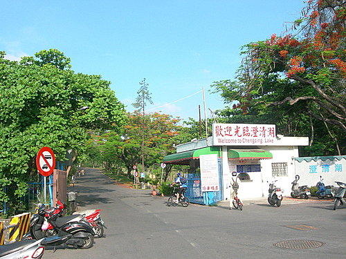

對高雄居民來說，
如果說柴山是登山車的黃金賞景路線，
那麼澄清湖環湖道便是公路車練車的鑽石路線。
澄清湖環湖道自大門口起點開始，
以順時鐘方向環繞外圍一圈，
每圈距離約7公里 ，
沿途湖光景色迷人，
不論係晨間或夜騎，
總是吸引眾多的單車客，
投入它清幽迷人的懷抱。
如果你曾親身前往感受該地車水馬龍的自行車人潮，
或許就會驗證
縣長楊秋興計畫闢建環湖自行車專用道，
係一有遠見的利多政策。
自從花東鐵馬之旅後，
在先拜車友吳大的號召下，
週末假日前往約騎，
自己亦不知不覺的喜歡上清晨環湖悠騎的樂趣，
接連多次前往體驗，樂此不疲。
小弟特地拍了一些相片，
略做簡報以饗各位車友。 
A.騎乘路線景點如下：
澄清湖大門口（澄清路）—正修大學—圓山飯店（圓山路）--
中興塔（松藝路）--高爾大球場—漆彈射擊場（文前路）--
後門入口—露營區—三亭攬勝—得月樓—澄清湖棒球場—
長庚醫院—鳥松溼地公園—麥當勞—大門口
B.建議事項：
1.早晨6時開始騎乘，氣溫宜人，景色最佳。
2.以順時鐘方式騎乘，可避免等紅綠燈。
3.如欲夜騎，需配有前後車燈，以維行車安全。
4.每圈7公里，騎乘1圈約12-30公鐘，依個人體力自行調配。
5.建議騎乘2-10圈，依個人時間及訓練計畫調配。
6.圓山路及松藝路有緩坡，可做爬坡訓練。 
7.登山車、公路車或折疊車沿途絡繹不絕，各種車種皆可騎乘。
C.河東獅約騎時間：
1.周六或周日早上6點整，大門口集合。
2.原則會邀請資深車友（如吳大、肉粽、TONY吳）蒞臨指導。
3.騎乘時間約90分鐘（約3-7圈），小敘一下，8點前解散各自返家。
D.個人訓練記錄：
97.4.26.—環湖6圈（93分）
97.5.24.—環湖6圈（90分）
@澄清湖前之花園廣場
@早上六點整，開放汽車進入，車水馬龍，門庭若市
早上在此集結之車友相當多，多數採順時鐘騎車環湖（可免等紅綠燈)
@澄清湖環湖行經正修大學前面
@轉彎進入圓山路
@圓山路係為第一段緩爬坡
@途經圓山飯店門口
@圓山路轉進松藝路係第二段爬坡

@松藝路接近中興塔路段，較陡的第三段爬坡


@體力不支的路人甲，爬坡後稍做休息，再出發
@中興塔旁係美景如畫之澄清湖高爾夫球場
@松藝路盡頭轉進文前路
@行經漆彈場

@行經澄清湖後面，亦可買票入內
@行經後門後，進入風景最優的湖畔路線
@後門路段，道路寬敞，慢騎賞景，競速狂飆兩相宜
@途經復國島及吊橋
@三亭攬勝係車友聚集休憩的最佳景點

@行經澄峰別墅景觀大樓
@得月樓係有名的賞景品茗餐廳
@行經高雄縣澄清棒球場、長庚醫院路段係車較多路段，宜注意行車安全
@近大門旁的溼地公園
@大門前的慈香庭供應元氣早餐哦
@澄清湖的票價並不便宜，早早起床，利用免費開放運動時間入場，
不失為節省荷包的好方法
@週末假日晨間，河東獅車隊經常邀請資深車友，泣臨指導
左起為小祥、肉粽、吳大